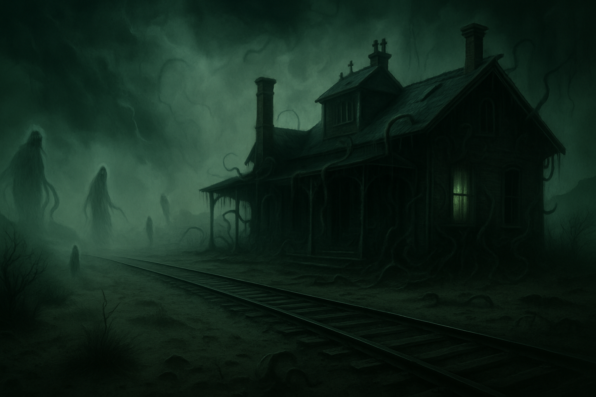

A Heptaverse Setting
A Ribhian Games 2d10 Heptaverse Setting
Madness & Dust
Dust swirls across the American frontier as reality bends at the edges of perception. Isolated towns huddle under skies that no longer behave as they should. Strange phenomena plague the territories — cattle found geometric arrangements, voices from dry wells, the unmistakable sense that something old and vast is paying attention.
"The winds of fortune blow fierce across these plains, carrying whispers from beyond. Some call it chance, others destiny — but those who've felt its touch know the truth. Fortune ain't just luck. It's a power that can be harnessed... if you're willing to pay the price."
The frontier has always been a place where civilization thins and the wild takes over. In Madness & Dust, that wildness goes deeper than wolves and outlaws. The Deck of Fortune manifests cosmic forces that gamblers, mystics, and desperate souls learn to read — and sometimes redirect. The land itself remembers things that happened before people arrived to name them.
Three celestial bodies in impossible configurations govern the ebb and flow of Fortune. Survival demands more than a quick draw. It demands understanding what's out there in the dark between the stars — and why it's started looking back.
Who You Are
Frontier Heritages
The frontier draws souls from every corner of the world. Each heritage carries its own relationship with the cosmic forces reshaping the territories — and one among them bears those forces directly.
Cosmic Cost (choose one): Nightmares · Social Stigma · Unstable Fortune · Physical Mark
What You Become
Frontier Paths
Nine paths channel the cosmic forces of the frontier. Each follows the universal 2-1-1 ability pattern and expends Grit — the frontier's manifestation of cosmic power — to fuel its unique abilities.
The Cosmic Mechanic
The Deck of Fortune
Where ordinary gamblers shuffle shadows across saloon tables, the Deck of Fortune consists of 58 cards imbued with power that influences reality itself. It is both game mechanic and story device — a physical manifestation of cosmic forces that shape the frontier.
The cards don't simply tell your fortune. They are your fortune. And in the right hands, they can change it.
The Four Suits
Powered by the Ribhian Games 2d10 System
Madness & Dust is a fully compatible Heptaverse setting. Characters may travel between all seven worlds — Grit converts 1:1 to the local cosmic resource wherever fortune takes them.